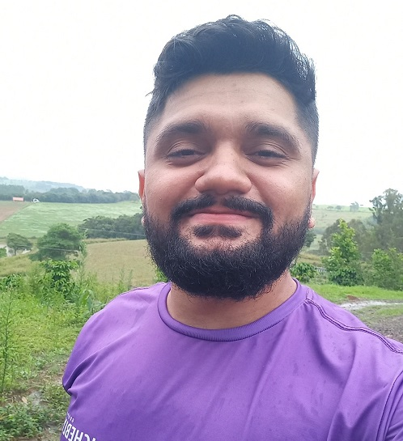
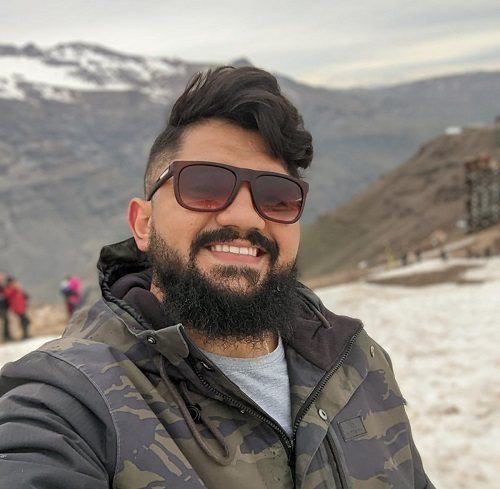

<div class="container-team">
    <section class="page-section bg-light" id="team">
        <div class="container">
            <div class="text-center">
                <h2 class="section-heading text-uppercase mt-3">O time da empresa</h2>
                <h3 class="section-subheading text-muted">Essa é a relação de sócios e desenvolvedores da empresa</h3>
            </div>
            <div class="row">
                <div class="col-lg-4">
                    <div class="team-member">
                        
                        <h4>Luan Santos</h4>
                        <p class="text-muted">CEO e Desenvolvedor Back-end</p>
                        <a class="btn btn-dark btn-social mx-2" href="#!" aria-label="Parveen Anand Twitter Profile"><i
                                class="fab fa-github"></i></a>
                        <a class="btn btn-dark btn-social mx-2" href="#!" aria-label="Parveen Anand Facebook Profile"><i
                                class="fab fa-instagram"></i></a>
                        <a class="btn btn-dark btn-social mx-2" href="#!" aria-label="Parveen Anand LinkedIn Profile"><i
                                class="fab fa-linkedin-in"></i></a>
                    </div>
                </div>
                <div class="col-lg-4">
                    <div class="team-member">
                        
                        <h4>Lucas Santos</h4>
                        <p class="text-muted">CEO e Desenvolvedor Front-end</p>
                        <a class="btn btn-dark btn-social mx-2" href="#!" aria-label="Diana Petersen Twitter Profile"><i
                                class="fab fa-github"></i></a>
                        <a class="btn btn-dark btn-social mx-2" href="#!" aria-label="Diana Petersen Facebook Profile"><i
                                class="fab fa-instagram"></i></a>
                        <a class="btn btn-dark btn-social mx-2" href="#!" aria-label="Diana Petersen LinkedIn Profile"><i
                                class="fab fa-linkedin-in"></i></a>
                    </div>
                </div>
                <div class="col-lg-4">
                    <div class="team-member">
                        
                        <h4>Thiago Soares</h4>
                        <p class="text-muted">Desenvolvedor Back-end</p>
                        <a class="btn btn-dark btn-social mx-2" href="#!" aria-label="Diana Petersen Twitter Profile"><i
                                class="fab fa-github"></i></a>
                        <a class="btn btn-dark btn-social mx-2" href="#!" aria-label="Diana Petersen Facebook Profile"><i
                                class="fab fa-instagram"></i></a>
                        <a class="btn btn-dark btn-social mx-2" href="#!" aria-label="Diana Petersen LinkedIn Profile"><i
                                class="fab fa-linkedin-in"></i></a>
                    </div>
                </div>
            </div>
            <div class="row">
                <div class="col-lg-8 mx-auto text-center">
                    <p class="large text-muted">Lucas e Luan, irmãos gêmeos apaixonados por tecnologia, fundaram a
                        Digital Nexus Technology, uma empresa de desenvolvimento de software. Lucas se destaca no design e na
                        experiência do usuário, enquanto Luan é especialista em algoritmos e sistemas. Juntos, combinam
                        suas habilidades complementares para criar soluções inovadoras e de alta qualidade.</p>
                </div>
            </div>
        </div>
    </section>
</div>